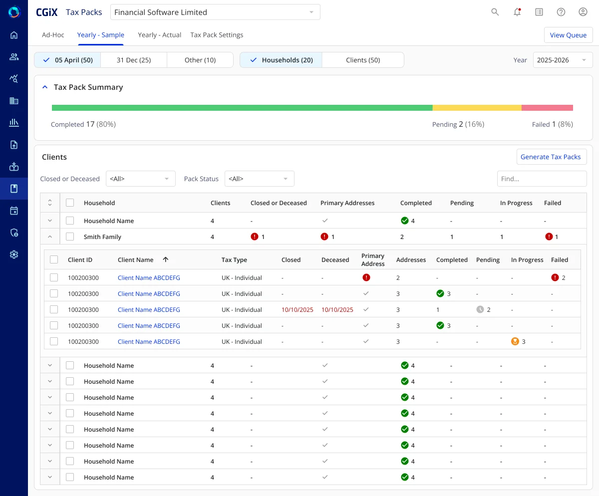

CGiX capital gains tax platform
Redesigning Financial Software Limited's award-winning capital gains tax platform so advisers can reach reporting, analysis and scenario planning faster and read complex tax data at a glance.
- Scalable design system shared across every module
- Restructured IA and optimised adviser workflows
- Visualisations that surface trends and anomalies